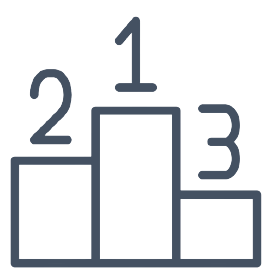

Що ви зможете знайти на нашому сайті?
Student Rating – це сервіс для ведення рейтингу успішності студентів.
Наш сервіс створений для внесення та збереження даних про успішність студенів. Тут ви зможете переглянути успішність студентів та порівняти їх оцінки. Зразок перегляду рейтингу зображений нижче.
1. Вʼячеслав Чорновіл
5
2. Григорій Сковорода
5
3. Степан Бандера
4
4. Василь Стус
3
5. Іван Мазепа
2